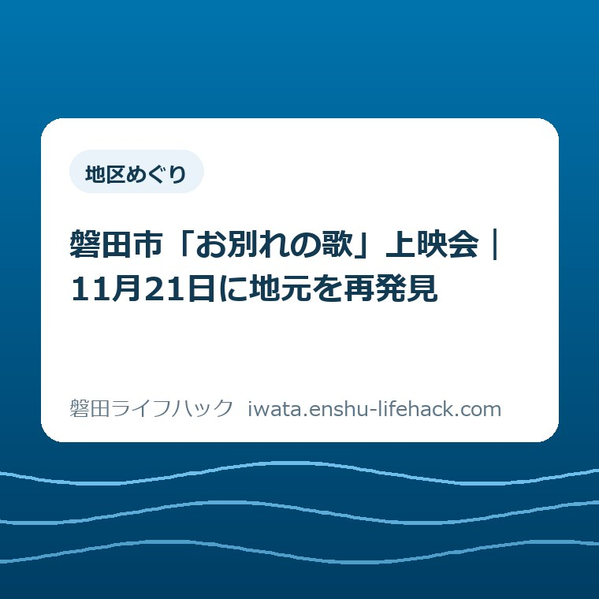

地区めぐり
磐田市「お別れの歌」上映会｜11月21日に地元を再発見

この記事の要点
Q. 遠出は難しいけれど、磐田で映画を見て地元を楽しめる？
A. 磐田市で撮影された映画「お別れの歌」の上映会は、2026年11月21日（土）、中央図書館内の視聴覚ホールで開催予定です。13時30分開場、14時上映、16時監督挨拶、16時30分閉会。無料・事前申込制・先着100名で、締切は11月17日ですが定員で受付終了です。今日は開催日を家族と共有し、申込み前に市公式ページで受付状況を確認してください。
遠出が難しい家族にも、地元を見直す午後はつくれる
映画を見に出かけるにも、家族の予定を合わせる仕事があります。土曜日が休みとは限らず、子どもの用事、家族の送迎、夕方の支度まで考えると、行きたい気持ちだけでは予定は決まりません。遠くの観光地へ出かける時間を取りにくい人ほど、外出先を探す前に調整で疲れてしまいます。すでに払っているその手間を、軽く見たくありません。
今回紹介するのは、磐田市の中央図書館で映画を見ながら、見慣れた地域を見直す機会です。施設の貸出手順や図書館カードの作り方を案内する記事ではありません。磐田が映像の中でどう見えるかを受け止め、その後の暮らしに何を持ち帰れるかという切り口で、上映会の予定を整理します。
制度の利用条件や施設の対応は個別条件で変わります。この上映会でも、家族の人数、移動の方法、鑑賞時に必要な配慮は同じではありません。この記事は参加できることを保証するものではなく、2026年10月16日に確認した公表情報を、家族で相談できる言葉に置き換えた案内です。
公式案内で確認した開催日・費用・申込期限
磐田市公式の上映会案内は2026年10月13日更新です。開催日は2026年11月21日（土）。会場は磐田市立中央図書館内の視聴覚ホールです。鑑賞料金は無料ですが、事前申込みが必要です。先着100名で、申込締切は2026年11月17日（火）。締切前でも定員に達した時点で受付を終了します。
当日の案内は、13時30分開場、14時上映、16時監督挨拶、16時30分閉会です。上映だけを見て終わる催しではなく、映画を撮った監督から、映画を通して見た磐田の魅力について話を聞ける構成になっています。時刻の間隔から作品の正確な上映時間を推測せず、当日の進行予定として受け止めてください。
申込締切が11月17日と書いてあっても、その日まで席が残るという意味ではありません。先着順の受付では、期限と空席の有無を別々に見る必要があります。本記事では残席数を確認できていません。市の案内が公開されていることと、希望人数で申込みできることを同じに扱わないようにしてください。
対象は、磐田市に関心やゆかりがある方、SNSを活用した磐田の魅力発信に興味などがある方とされています。居住地・年齢は不問です。市外の家族にも案内を共有できます。ただし年齢制限がないことと、作品がすべての年齢の子どもに合うことは別です。内容や鑑賞中の対応が気になる場合は、申込み前に確認してください。

映画の中で、いつもの磐田が別の表情を持つ
磐田市公式ページは、実際に磐田市で撮影された映画を上映し、見慣れた場所が映画の中でどう映るかを通して魅力の再発見につなげる、と開催の趣旨を説明しています。主演者や物語の紹介を先に読むだけでなく、地域を見る機会として上映会を位置づけている点が、この催しの特徴です。
私が面白いと感じるのは、地元の魅力を知るために、まず別の土地へ出かけなくてもよいことです。通り慣れた地域は、普段は目的地へ向かう途中の背景になりがちです。映画としてまとまった時間をかけて見ると、日常では通過してしまう風景に目を止めるきっかけになる。これは私の期待であり、鑑賞後の効果を保証する話ではありません。
見るときの問いは、一つに絞ってもよいと思います。「どこが映っているか」を全部当てる必要はありません。「普段の自分なら見過ごす何が目に残ったか」。建物、道の奥行き、人の動きなど、気になったものを一つ覚えて帰る。私は、そのくらいの見方なら、地元に詳しい人も詳しくない人も同じ席で楽しめると考えます。
一方で、私は作品を鑑賞した体験としてこの記事を書いていません。具体的な撮影地点、場面の意味、あらすじの評価は、今回の確認資料だけでは断定しません。実在する場所の名前を想像で補ってしまうと、地域紹介のつもりが誤案内になります。映画の中の場所を確かめたくなったら、作品や主催者の公式情報を手がかりにしてください。
上映後の監督挨拶まで含めて、午後を考える
磐田市の上映会案内では、映画の後に監督の挨拶と、映画から見た磐田の魅力の紹介が予定されています。監督は柴田啓佑氏です。上映会の価値を作品鑑賞だけで判断せず、つくり手の視点も聞ける予定として家族に伝えると、帰宅時刻の相談が具体的になります。
開場から閉会までは3時間、上映開始から閉会までは2時間30分です。これは公表された時刻の差を計算した長さで、移動や受付の時間は含みません。私は、夕方に別の用事がある家族ほど、14時だけでなく16時30分も一緒に共有したほうがよいと考えます。始まる時刻だけでは、引き受けられる予定か判断しにくいからです。
監督の話を聞くなら、映画を見て気になったことを一つ覚えておくだけでも、受け止め方は変わると思います。ただし公式案内から、質疑応答の実施や、参加者が直接質問できることまでは確認できません。質問会、交流会、サイン会があるという期待を足さず、告知されている監督挨拶として予定に入れてください。
途中入退場や遅刻時の対応も、公式案内に明記された範囲では確定できません。家族の都合で全時間の参加が難しいときは、短時間だけなら必ず入れるとは考えず、主催者に相談する内容として残しておきます。無理に予定を詰めて参加を決めるより、対応が分かってから家族と判断するほうが、当日の行き違いを減らせます。
中央図書館へ行く段取りは、鑑賞の予定と分ける
磐田市公式の施設ガイドでは、中央図書館の所在地は磐田市見付3599-5です。上映会場となる視聴覚ホールは館内2階にあります。図書館の建物に着くことと、ホールで上映開始を待てる状態になることは別です。家族の集合場所を決める際は、単に「図書館」ではなく、会場名まで共有すると相談しやすくなります。
施設ガイドには無料駐車場と、遠鉄バス磐田天竜線の「図書館前」下車・徒歩1分という案内があります。ただし駐車できることや、その日に使いたい時刻のバスがあることまでは保証されません。車なら満車時、バスなら往復の便を別に考える必要があります。この記事では交通費や当日の混雑を一律の数字で見積もりません。
車いす対応のエレベーターやトイレなども、磐田市の施設ガイドで案内されています。ただし設備があることだけで、ホール内の希望位置や当日の付き添い方法まで決まるわけではありません。配慮が必要なご家族は、「誰と、どの会場へ、どんな移動で行くか」を伝え、上映会の運営と施設の設備を分けて確かめると話が通りやすくなります。
本の貸出しなども一緒に考える場合は、磐田市の図書館6施設の使い分けを参考にしてください。ただし上映会の受付と図書館の日常利用は別の予定です。私は、映画の日に用事を全部まとめるより、まず上映会の時間を確保し、余裕が残れば本を見る、という順番を勧めます。
良い点——近くで鑑賞し、つくり手の視点も聞ける
今回の上映会の良い点は、無料の作品鑑賞と、監督から地元の魅力を聞く機会が一つの予定にまとまっていることです。磐田市の公式案内で会場、時刻、申込条件を一緒に確認できます。家族へ情報を渡す際に、作品の上映場所と別会場の講演をそれぞれ探す必要がない点を、私は評価します。
中央図書館という市内の施設で開催することも、遠出の時間を取りにくい人には選択肢になります。もちろん市内でも移動の負担は違います。誰にとっても近いとは言えません。それでも、遠方まで一日かけて出かける計画以外に、地元の文化に触れる午後が提示されることには意味があると思います。
地域を知る入口が映画であることも良い点です。歴史の年号や施設の一覧を覚える形と違い、風景と人の動きをまとまった作品として受け取れます。私は、磐田の良さをうまく説明できない人にも、まず見てから考える余地がある催しとして紹介したい。詳しさを競わず参加できる入口があるのはありがたいことです。
注文したい点——無料という言葉の外にある負担も見たい
上映会の参加を考える家族には、鑑賞料金以外にも、予定を空ける時間、送迎、同行者の調整という負担があります。無料はありがたい条件です。その上で私は、参加しやすさを判断する案内には、席の受付だけでなく、必要な配慮をどこへ相談できるかまで見通せることを望みます。これは運営側への私の意見です。
今回確認した案内では、残席数、家族分の申込みの具体的な入力方法、途中入退場の扱いまでは分かりませんでした。分からない項目を「不可」と決めつけるつもりはありません。家族によって判断を左右する点なので、参加を検討する人が問い合わせる事項として、記事の中でも見える位置に残しておきます。
私は、SNSでの発信に興味がある人を対象に含める趣旨にも、地元の魅力を広げる良さがあると感じます。その上で、鑑賞と撮影・投稿の許可は分けて案内されると助かります。対象欄にSNSとあるだけで、スクリーンや館内を自由に撮影して投稿できるとは読めません。実際の撮影可否は当日の案内に従ってください。
対案・結論——今日は11月21日を家族と共有する
今日できる一歩は、2026年11月21日（土）の開催日を家族と共有することです。申込み、交通手段、夕食の予定を一度に全部決める必要はありません。まず開催日と13時30分から16時30分という枠を伝え、家族の予定が重なるかを確かめる。私は、この順番が調整のやり直しを減らすと考えます。
共有文は、たとえば「11月21日（土）、中央図書館で磐田ロケ映画『お別れの歌』の無料上映会。13時30分開場、16時30分閉会予定。申込みが必要なので、予定が合うか教えて」と書けます。これは家族への連絡例です。申込み済みという意味にせず、市公式の案内リンクも添えておくと、受け取った人も条件を確認できます。
予定が合いそうなら、市公式ページで最新の受付状況と申込フォームを確認する流れです。家族で一つの予定として話していても、席は参加する人数で必要になります。申込単位や同行者の登録方法はフォームの指示に従ってください。代表者が連絡を送っただけで家族全員の席が確保されたとは考えず、申込後の案内を確かめます。
別の日に文化に触れる予定を探しているなら、にこっとでの親子の秋鑑賞も比較の材料になります。開催日や受付方法は催しごとに違います。私は、映画に行けないことを残念な結論にせず、その家族が動ける日に合う催しを一つ選べれば十分だと思います。
大石の視点——無料でも、家族の午後はただではない
大石浩之（磐田市／不動産業）として、私は、外出の案内も誰がいつ動けるかから考えます。無料でも、家族の午後はただではない。仕事や家の用事をずらし、同行者の予定を聞き、帰宅後の段取りをつける時間は確かにかかります。だから「無料だから行こう」で終わらず、閉会時刻まで先に渡す。それが、案内する側の最低限の気配りだと考えます。
私は、身近な映画会を紹介するとき、どこまで準備を書けばよいか迷います。確認事項を並べすぎれば、楽しそうだった外出が手続きの山に見えてしまう。一方で、時刻と人数が曖昧なまま勧めれば、調整する人へ仕事を押しつけることになる。今回の案内では、最初の行動を「開催日を共有する」一つに絞りました。
地元を見る楽しみは、知っている場所の数で決まらないと私は思います。映画で気になった風景を、別の日の散歩や読書へつなげてもよい。地域の文化を現地で見る切り口なら、磐田の定光寺の千手観音を浜松で見る記事もあります。それぞれの公開条件を確かめながら、暮らしに無理のない入口を選んでください。
参加できた家族も、今回は見送る家族も、予定を共有したところまでで一つ前に進んでいます。映画の感想を無理に投稿する必要はありません。行くと決めた場合は、2026年11月17日の締切だけを頼りにせず、定員による受付終了も含め、最後は磐田市公式ページで最新の受付状況と開催内容を確認してください。

よくある質問
磐田市「お別れの歌」上映会の日時、申込み、家族の参加について、公式情報と未確認の点を分けて答えます。
「お別れの歌」上映会は、いつ、どこで開かれますか。
2026年11月21日（土）、磐田市立中央図書館内の視聴覚ホールで開催予定です。13時30分開場、14時上映、16時監督挨拶、16時30分閉会です。会場の中央図書館は磐田市見付3599-5にあります。映画だけでなく監督挨拶まで含めて帰宅の予定を考え、開催内容の変更は市公式ページで確認してください。
無料なら申込みをせず、当日行っても見られますか。
鑑賞料金は無料ですが、事前申込みが必要です。定員は先着100名、申込締切は2026年11月17日（火）で、定員になり次第受付終了です。残席数や当日受付の可否は本記事では確認できていません。申込みをせずに入場できると判断せず、市公式ページから最新の受付状況とフォームの案内を確かめてください。
子どもや市外に住む家族も参加できますか。
市公式案内では居住地・年齢は不問です。ただし、作品の内容が子どもに合うか、家族分をどう登録するか、鑑賞中にどんな配慮を受けられるかは別の確認です。年齢不問を託児や途中入退場の保証として受け取らず、必要な対応がある場合は、市公式ページに掲載された問い合わせ先へ申込み前に相談してください。
参考にした公式情報
- 「お別れの歌」上映会／磐田市（2026年10月16日確認）
- 施設ガイド 中央図書館／磐田市（2026年10月16日確認）
最終確認日：2026-10-16 ／ 本記事は公表情報と執筆者の見解を分けて記載しています。制度・数値・公開状況は変更される場合があるため、最新情報は磐田市公式ページでご確認ください。